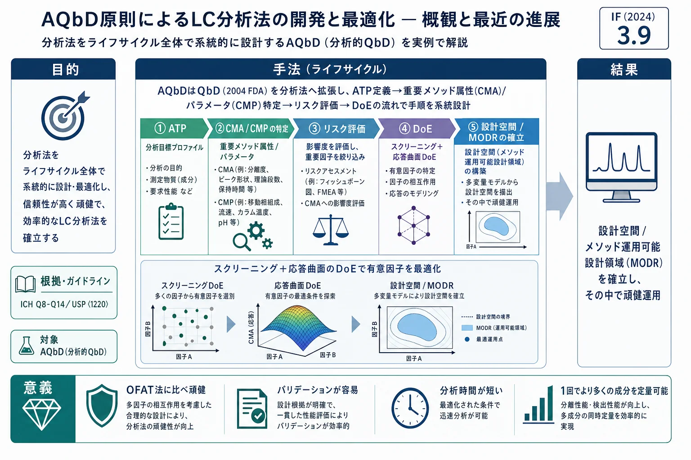

AQbD原則によるLC分析法の開発と最適化 — 概観と最近の進展

<!-- 方針: ほぼ全訳＋必要に応じた補足。原文構成に沿って訳出。「> 補足:」は訳者注。数式・統計量は原文どおり。 -->
書誌情報
- 原題: Development and Optimization of Liquid Chromatography Analytical Methods by Using AQbD Principles: Overview and Recent Advances
- 著者: Tim Tome, Nina Žigart, Zdenko Časar, Aleš Obreza（リュブリャナ大学 薬学部／Sandoz Development Center Slovenia (Lek Pharmaceuticals), スロベニア）
- 掲載: Organic Process Research & Development 2019, 23, 1784–1802. https://doi.org/10.1021/acs.oprd.9b00238（オープンアクセス, CC BY）
- インパクトファクター: 3.9（Org. Process Res. Dev., JCR 2024 / Clarivate）
- 受理経過: 受領 2019-05-21 / 公開 2019-08-14
- キーワード: AQbD／液体クロマトグラフィー／分析法の頑健性／分析法の最適化／医薬品分析
補足: AQbD (Analytical Quality by Design, 分析的品質設計) = 医薬品開発の QbD（品質を“設計で作り込む”考え方)を分析法に拡張したもの。「良い分析法は試行錯誤の結果ではなく、目標から逆算して系統的に設計する」という枠組みで、分析法のライフサイクル全体（開発→運用→変更)を管理する。生薬QCの指紋・多成分定量法を頑健で移管しやすい規格に育てる設計思想として有用。用語: ATP=分析目標プロファイル、CMA=重要メソッド属性(応答)、CMP=重要メソッドパラメータ(因子)、MODR=メソッド運用可能設計領域、DoE=実験計画法、MLR=多重線形回帰、ANOVA=分散分析、LoF=適合欠如、SST=システム適合性試験、OFAT=1度に1因子。
要旨（Abstract）
本総説は、QbD（2004年に米国FDAが導入、2005年にICHが承認)の拡張である AQbD の概念を提示する。AQbDは、分析手順のライフサイクル全段階を制御する系統的なメソッド開発アプローチであり、分析目標プロファイル(ATP)の定義、重要メソッドパラメータ(因子)の特定、重要メソッド属性(CMA、応答)の選択を含む。スクリーニング設計と応答曲面設計により有意因子を認識し、統計解析で最適化する。因子–応答の関係は数理モデルで記述され、最適応答を予測できる。CMA要件を満たす因子の多変量組合せは、設計空間あるいはメソッド運用可能設計領域(MODR) として提示され、そこでは頑健なメソッド性能が保証される。本総説はAQbDの理論的背景と、その有効性が実証された近年の事例を通じてワークフローを示す。AQbDで開発した分析法は高い頑健性を持ち、バリデーションが容易で、分析時間が短く、OFAT法より多くの分析対象を1回で定量できる。
1. 序論（Introduction）
医薬品産業の目標は一定品質の製品を提供すること。分析法は開発・製造・ライフサイクル全体で品質を保証する役割を担う。メソッドの最重要特性の一つが頑健性（ICH Q2(R1)：パラメータの小さな意図的変動に対して結果が保たれること)。従来のOFAT開発は非最適で頑健性が不明なメソッドを生みがちで、日常使用中の失敗につながる。
規制の枠組み
- QbDは2004年にFDAが新薬・関連プロセス開発の必須ツールとして導入（科学的設計で品質を製品に作り込む)。
- ICH Q8(R2)（2005承認)はQbDを「事前規定した目標から始まり、健全な科学と品質リスク管理に基づく製品・プロセス理解を重視する、系統的な開発アプローチ」と定義。
- ICH Q9（2005、品質リスク管理)、Q10（2008、医薬品品質システム＝ライフサイクル・革新・継続的改善)、Q11（2012、原薬)が続く。
- Q8(R2)は医薬品開発のライフサイクル管理としてQbDを求めるが、これを分析手順のライフサイクル管理（開発・バリデーション・移管・継続的改善)にも拡張できる。
- 2015年7月、FDAが医薬品・生物製剤の分析手順とメソッドバリデーションに関するガイダンスを公表（推奨であり法的義務ではない)。第3節で、頑健性試験は「初期リスク評価→DoEなどメソッドパラメータの多変量実験で因子効果を十分に評価・理解する系統的アプローチ」を採るべき、と明記。バリデーション後もメソッドが目的適合であり続けるライフサイクル管理を強調。
- 2017年、Pharmacopeial Forum 43でStimuli記事、続いて USP〈1220〉「分析手順ライフサイクル」（設計・開発／手順性能の適格性確認／継続的な手順性能の検証)や ICH Q14、Q2(R)改訂へと展開。
2. AQbDのワークフロー
2.0 分析目標プロファイル(ATP)
AQbDはATPの設定から始まる。ATPは分析法の目的（何を・どの範囲で・どの精確さで測るか)を規定する目標の集合で、規制当局に事前規定されるわけではないが、ライフサイクルを通じた柔軟性（＝規定内でのメソッド改良)を可能にする。
2.0' リスク評価（Risk assessment）
ATPを満たす分離を得るには、高リスクなメソッドパラメータを早期に見極める必要がある。広く使われるのは石川図(フィッシュボーン図) で、潜在因子を「装置・材料・方法・測定・実験室環境・人的要因」のカテゴリに分けてリスクを整理する。因子はさらに FMEA（故障モード影響解析) や優先順位マトリックスで、各因子がメソッド性能に与えるリスクの重大度を評価し、追加調査の要否を決める。
2.1 スクリーニング設計
HPLCは多用途だが変数が多く、臨界因子を適切に設定しないと性能が損なわれやすい。DoEは統計ツールで実験を設計・数理モデル化する系統的手法。リスク評価で多くの因子が挙がるが、すべてが有意とは限らない。スクリーニング設計は、潜在的臨界因子から最も有意な因子・交互作用を選び、いわゆる知識空間(knowledge space) を確立する。因子の変動幅は、応答がCMA要件（最小要件と目標要件)に達する/超えるよう十分大きく取る。例: 不純物プロファイリングのHPLCでは分離度 $R_s$ は2.0以上必須・2.5以上を目標とする。図3に (a) 3因子2水準の完全実施要因計画(8実験)、(b) それから得る一部実施要因計画(4実験)、(c) 3因子3水準の中心複合計画(中心点1を含む15実験)を示す。
2.2 応答曲面設計と応答モデリング
より上位のDoEが応答曲面設計。スクリーニングで得た有意因子を、その交互作用も含めて最適化する。因子を2水準超で調べ、応答との関係を二次以上の多項式で記述する：
$$y = b_0 + b_1x_1 + b_2x_2 + b_{11}x_1^2 + b_{22}x_2^2 + b_{12}x_1x_2 + \text{residual}$$
二次項の導入で因子–応答の非線形関係（曲率)を表せる。2水準超のため実験領域に反復中心点を置いて実験誤差を求める。例: 3水準完全実施要因計画・中心複合計画(図3c)・Box-Behnken計画・Doehlert計画。因子水準に制約があれば非対称領域をカバーするD-optimal計画。これらはスクリーニングより多くの実験を要するが、与えた因子組合せの応答を予測し、最適応答を与える組合せを見つけられる。
応答モデリングでは多項式を実験データに当てはめる。当てはめは通常 MLR で、多項式の各項の回帰係数($b_0, b_1, b_2, b_{11}, b_{22}, b_{12}, \dots$)を算出して因子・交互作用効果を評価する。モデルの統計的有意性はANOVAで判定する。ANOVAは応答の全変動を回帰成分＋残差成分に分け（自由度で正規化した平均平方 $MS_{total}=MS_{regression}+MS_{residual}$)、F検定で $F_{model\ significance}=MS_{regression}/MS_{residual}$ を計算、選んだ確率水準（例 $p\le0.0005$)の臨界F値を超えればモデルは有意。反復実験（中心点の繰返し等)があれば残差を適合欠如(LoF)成分＋純粋実験誤差成分に分け（$MS_{residual}=MS_{LoF}+MS_{pure\ error}$)、$F_{model\ fitness}=MS_{LoF}/MS_{pure\ error}$ が臨界F値を超えればモデルは有意なLoFを持つ（＝当てはまり不良)。実験設計・統計解析には経験モデルベースのソフト(MODDE, Design-Expert, Fusion 等)を用いる。
2.3 理論モデルベースのLC法開発
DoE（経験モデル)に加え、保持モデル(LSS等)ベースのソフト（DryLab等) を用いる開発も紹介される。少数の実験から保持を予測して条件空間を探索する（本サイト収録の DryLab 原典・保持モデリング総説と地続き)。
2.4 設計空間 / MODR
設計空間の確立がメソッド開発で分析者が達成すべき主目標。応答曲面設計の結果を応答モデリングで解釈して作り、通常は多応答曲面プロット（各応答の等高線を重ね合わせた図)として表す。すなわち設計空間は、実験領域の内側で、事前規定した全CMA基準を満たし、メソッドが頑健と定義される因子値の多変量範囲。分析法の作業性能を具体的に表す設計空間をMODR（メソッド運用可能設計領域) と呼ぶ（図4に例)。MODR内の任意のパラメータ値で運用すれば、十分な確率で品質ある結果を出せる——メソッドは1つのセットポイントだけでなくMODR内のどこでも運用でき、変動源は制御戦略（例: SST) で管理する。規制上、バリデーション後のMODR内の移動は「変更」でなく「調整」とみなされ、再バリデーション不要。ゆえにMODRは日常運用の柔軟性と頑健性の領域を与える。
ICH Q8(R2)は設計空間内のパラメータが「品質の保証を与える」ことを求めるため、設計空間の作成時には応答測定やモデルの不確実性による変動を認識する必要がある。そうして初めて、応答(CMA)が規定基準に達する確率が十分高く（例 99%の確実性)なり、メソッドの品質が担保される。モンテカルロ・シミュレーションが、モデル不確実性を推定して設計空間内でCMA規格が満たされる保証水準を与える手法として最もよく使われる。
3. AQbDのLC法開発への最近の応用（2016–2018）
AQbDのLC法開発への適用をまとめた総説は複数あるが、本総説の後半は、主にUV検出のHPLC定量法へのAQbD適用を扱う 2016–2018年の研究論文を詳細にレビューする。HPLCの多用途性を活かし、多数の医薬品で、ATP設定→リスク評価→スクリーニング／応答曲面DoE→設計空間/MODR確立→制御戦略という流れが具体的に示される（各事例で分離度・分析時間・ピーク対称性などのCMA、CMP、設計空間の可視化、モンテカルロによる保証水準などが提示される)。
4. 結論（Conclusion）
分析法は医薬品の開発・製造で鍵となる役割を果たす。LC（HPLC/UPLC)が最も一般的に使われ、製品が複雑化するとメソッドも複雑化して開発が難しくなる。最重要特性の一つが頑健性で、開発段階で評価すべき。従来のOFATは非最適・頑健性不明のメソッドを生み、日常使用で失敗しがち。AQbDは、ATP設定→CMAとその規格の決定→重要メソッドパラメータ(因子)の特定から始まる系統的アプローチ。DoEがAQbDの中核で、統計的に実験を設計・数理モデル化する。実験計画により因子・交互作用の応答(CMA)への影響を調べられる。スクリーニング設計で有意因子を同定して知識空間を作り、応答曲面設計で有意因子・交互作用・高次項を実験・統計解析して応答モデルを作り、最終的に設計空間／MODRを確立して頑健運用と制御戦略・ライフサイクル管理につなげる。AQbD法はOFAT法に比べ、頑健性・バリデーションの容易さ・分析時間の短さ・1回で定量できる成分数のいずれでも優れる。
補足（生薬QC実務への示唆）: AQbDは、生薬の指紋・多成分定量法を「作って終わり」ではなく頑健で移管しやすい規格として設計・維持するための上位の枠組み。実務の流れは——(1) ATPで「何を・どの範囲で・どの精確さで測るか」を先に言語化（例: 主要Q-markerを±2%で定量し臨界ペアを分離度 $R_s\ge2.0$〈目標2.5〉で分離)。(2) リスク評価（石川図で装置・材料・方法・測定・環境・人を洗い出し、FMEAで優先順位付け)で効きそうな因子(pH・有機溶媒%・温度・勾配)を特定。(3) スクリーニングDoEで有意因子に絞って知識空間を作り、(4) 応答曲面DoE（または DryLab 等モデルベース)で最適化——多項式をMLRで当てはめ、ANOVA（F検定・適合欠如検定)でモデルの有意性・当てはまりを確認する。(5) 設計空間/MODRを多応答の等高線重ね合わせで描き、モンテカルロで「99%の確実性でCMAを満たす」領域を求めて、その中で運用（＝多少条件が動いても頑健、再バリデーション不要)。(6) SST・制御戦略とライフサイクルで維持する。本サイトの姉妹論文——実験計画法(DoE)総説、保持モデリング総説、DryLab原典、CRF比較——が、それぞれAQbDの「DoEベース」「モデルベース」「最適化の採点基準」の道具立てにあたる。OFAT（1因子ずつ)からAQbDへ移すと、頑健性・バリデーションの容易さ・分析時間・同時定量成分数のいずれも改善するというのが本総説の一貫した主張で、ロット差の大きい生薬の堅牢な規格づくりにそのまま通じる。